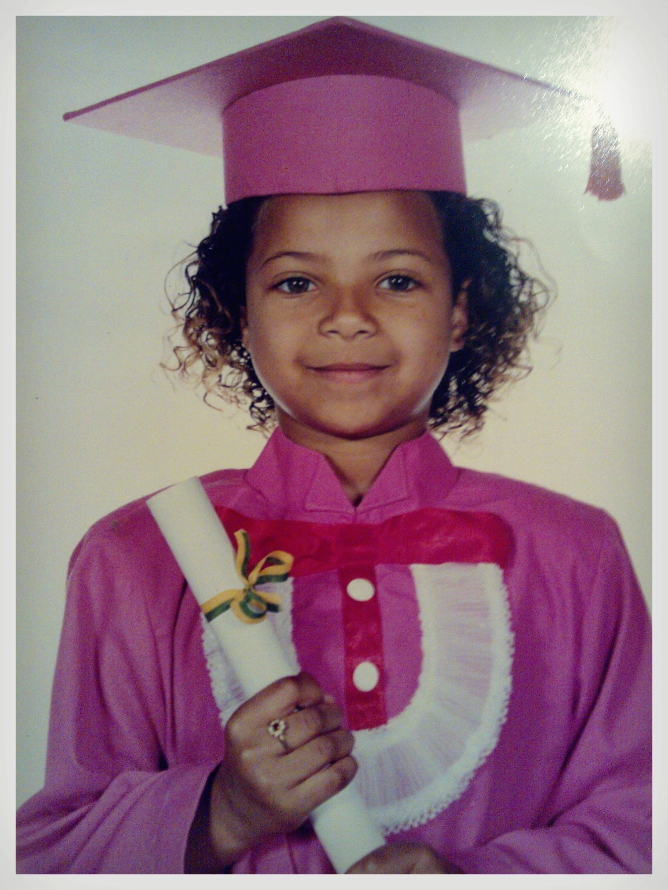
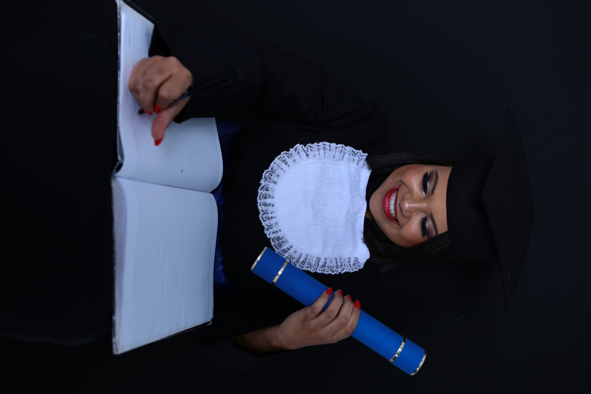

História
Meu nome é Gleicy Stefany Nunes Gonçalves, eu nasci na cidade de Belo Horizonte em Minas Gerais, no dia 17/06/1995, por volta de 11:00 da manhã(Geminiana com ascedência em Virgem.. rsrsrs). Eu fui uma criança bagunceira, e bem curiosa, com 10 anos decidi que queria ser engenheira, sem saber ao certo o que um engenheiro fazia, mas pessoas falavam: " Engenheiro constroe coisas", e eu pensava "é isso, quero construir coisas". Mas eu não era uma aluna exemplar, e não conseguia concentrar na aula, sempre aprendi melhor sozinha. E foi muito dificil ,e adaptar ao ensino convencional, quando eu tava no terceiro periodo minha mãe decidiu que eu faria de novo, pois eu ainda não sabia ler e escrever, então repeti de ano, sim, tomei bomba no terceiro periodo, pelo menos foi a unica, haha.
Tenho duas irmãs maravilhosas, uma contadora, e a outra estudando medicina( essa familia tem futuro ne?). Meus pais se separaram quando eu ainda era bebê, mas minha mãe pouco tempo depois cnheceu meu padrasto, e ele foi o melhor pai do mundo. Minha mãe sempre foi um exemplo de mulher forte e trabalhadora, nunca abaixou a cabeça, mesmo quando se viu sozinha com 3 crianças pequenas, ele foi forte e nos criou com muito esforço, tenho muito orgulho da história dela.

Conforme fui crescendo o desejo de ser Engenheira foi aumnetando, eu queria criar coisas, queria pensar coisas que ninguem tinha pensado antes. Na adolescencia tive a chance de participar de um curso de aprendizagem industrial no SENAI, era um curso de eletrica, e sai de la com a certeza, vou ser Engenheira Eletricista!
Formação
Aos 18 me formei em Tecnico em Eletrotécnica pelo SENAI. Anos depois aos 20 ingressei na Engenharia Elétrica, após um longo percurso, no fim de 2020 finalmente me formo. Mas ao longo da Engenharia comecei a programar e me apaixonei, atualmente faço estágio em Desenvolvimento Web, e cada dia me apaixono mais, no fim meu desejo de construir algo foi atingido, construo aplicações e sites, desenvolver algo do zero e vê funcionando é alucinante, é o que me move, sou apaixonada pela Engenharia Elétrica, mas amo o mundo que a programação me proporciona, amo construir, e assim vamos contruindo um mundo mais digital!
